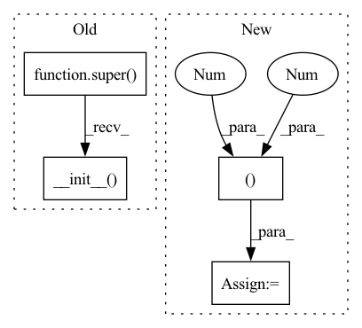

Pattern ID :34796

Before Change
class MyDataset(BaseDataset):
def __init__(self, data_paths: dict, mode="train"):
super().__init__(ImageDataset, data_paths, mode)
class MyDataLoader(BaseDataLoader):
pass
After Change
if label_path is not None:
self.labels = pd.read_csv(label_path, index_col=["image_name"])
mean = (0.5, 0.5, 0.5)
std = (0.5, 0.5, 0.5)
// transforms
self.transform = transforms.Compose([
//transforms.RandomRotation(10),
//transforms.Resize((32,32)),
//transforms.ColorJitter(0.2, 0.2, 0.2, 0.01),
In pattern: SUPERPATTERN
Frequency: 3
Non-data size: 4
Instances
Fragment ID: 99778642
Project Name: deeperlearner/pytorch-template
Commit Name: 662aa3e639fc5ff861fc47d269afc1fcd379973d
Time: 2021-01-31
Author: b04202035@g.ntu.edu.tw
File Name: data_loader/data_loader.py
M Class Name: MyDataset
N Class Name: MyDataset
M Method Name: __init__(4)
N Method Name: __init__(3)
M Parent Class: Dataset
N Parent Class: BaseDataset
M File Name: data_loader/data_loader.py
N File Name: data_loader/data_loader.py
M Start Line: 55
M End Line: 56
N Start Line: 13
N End Line: 33
'>
Before Change
class Model(ResNet):
def __init__(self):
super(Model, self).__init__(BasicBlock,[2,2,2,2])
class Loss(nn.Module):
def __init__(self):
super(Loss, self).__init__()
After Change
self.conv3_x = self._make_layer(block, 128, num_block[1], 2)
self.conv4_x = self._make_layer(block, 256, num_block[2], 2)
self.conv5_x = self._make_layer(block, 512, num_block[3], 2)
self.avg_pool = nn.AdaptiveAvgPool2d((1, 1))
self.fc = nn.Linear(512 * block.expansion, num_classes)
def _make_layer(self, block, out_channels, num_blocks, stride):
'>
Fragment ID: 99778647
Project Name: wwzzz/easyfl
Commit Name: ddf7d4db52a22b726ed3c58c0d4f2638f9d22ed8
Time: 2021-08-25
Author: zwang@stu.xmu.edu.cn
File Name: benchmark/cifar10/model/resnet18.py
M Class Name: Model
N Class Name: Model
M Method Name: __init__(4)
N Method Name: __init__(1)
M Parent Class: FModule
N Parent Class: ResNet
M File Name: benchmark/cifar10/model/resnet18.py
N File Name: benchmark/cifar10/model/resnet18.py
M Start Line: 135
M End Line: 136
N Start Line: 80
N End Line: 94
'>
Before Change
class Model(ResNet):
def __init__(self):
super(Model, self).__init__(BasicBlock,[2,2,2,2])
class Loss(nn.Module):
def __init__(self):
super(Loss, self).__init__()
After Change
self.conv3_x = self._make_layer(block, 128, num_block[1], 2)
self.conv4_x = self._make_layer(block, 256, num_block[2], 2)
self.conv5_x = self._make_layer(block, 512, num_block[3], 2)
self.avg_pool = nn.AdaptiveAvgPool2d((1, 1))
self.fc = nn.Linear(512 * block.expansion, num_classes)
def _make_layer(self, block, out_channels, num_blocks, stride):
'>
Fragment ID: 99778644
Project Name: wwzzz/easyfl
Commit Name: ddf7d4db52a22b726ed3c58c0d4f2638f9d22ed8
Time: 2021-08-25
Author: zwang@stu.xmu.edu.cn
File Name: benchmark/cifar100/model/resnet18.py
M Class Name: Model
N Class Name: Model
M Method Name: __init__(4)
N Method Name: __init__(1)
M Parent Class: FModule
N Parent Class: ResNet
M File Name: benchmark/cifar100/model/resnet18.py
N File Name: benchmark/cifar100/model/resnet18.py
M Start Line: 137
M End Line: 138
N Start Line: 80
N End Line: 94